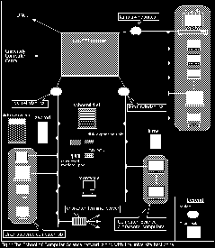

Index of all Wisdom issues.
Index of all Wisdom issues.
by Dario Sfalcin
{Editor's note: here is yet another article, by some guy on the exec, introducing himself. He is the 2nd year Rep. Please don't laugh. he's sensitive.}
On the sixteenth day of the eighth month in the year nineteen hundred and seventy three, the world was graced with the birth of a baby boy. This however, was no ordinary bambino. This bambino wreaked of excellence, among other things, and this bambino was hailed the great DARIO DELANO SFALCIN.
The excellence that Dario reeked of, was realized at an early age when he discovered Twister. Dario was a whirlwind of speed and agility and soon surpassed the other children. For them it was a mere game but for Dario it was a way of life. Dario's lust for the game was temporarily quenched when he experimented with the hoola-hoop in the early eighties. However constant exposure to this new game made him irritable and prone to fits of rage, and he soon returned to his true love, Twister.
In the early years Dario attended Glenwood Elementary, and continued his education at Vincent Massey where he had many cool friends. While in highschool he played badminton, tennis, soccer and did numerous other things. Besides Dario's strange fetish for Twister, he also enjoys music. Some of his favorite groups are The Police, Genesis, They Might Be Giants, and Vivaldi's Greatest Hits Volumes One through Four. Dario hopes one day to have a career as a programmer, and his parents are quite proud of him but hope he will move out of their house soon. If you want to send him e-mail, go ahead, to: sfalci1@server.uwindsor.ca but be nice, he's very sensitive.
by Alain Siodlowski
 The School of Computer Science UNIX network has been the site for many experimental programs and research. The network is used by the CS faculty, grad students and for certain undergrad courses.
The network started, in 1987, as a few Sun 3/50 Unix workstations, several character terminals and a file server (zaphod.cs.uwindsor.ca). Since then, the network has expanded to a slew of X terminals, workstations, a few file servers and several printers. Most of the old equipment is either still in use (the Sun 3/50's are now used as X terminals) or stored in a corner of some room somewhere in Erie Hall, as spare parts. The paradigm has changed from diskless workstations / file server model to X terminals and many compute servers (and a few SPARC based workstations).
The School of Computer Science network is actually comprised of 4 networks. There are 2 Ethernet 10Base-T networks, one thick Ethernet network and the SL/IP. All these networks along with the University Computer Centre are Engineering are hooked up to the CISCO router. The router also has our ONet connection (which is our connection to the Internet) via a T1 line (56MBps) to the University of Toronto.
The main server, is schoenfinkel.cs.uwindsor.ca (or for simplicity it can also, and usually is, referred to as: cs.uwindsor.ca). It is a Sun 670MP with 2 SPARC processors (upgradable to 8 processors), 64 MB of RAM, about 2.5 GB of hard disk storage and a CD-ROM drive. Its use is mainly for professors and grad students in their research and for undergrads with software that is not available on other systems (like the UCC's SGI Challenge XL). This machine is hooked up to both the thin Ethernet (cs.uwindsor.ca), the 10Base-T (lamf.uwindsor.ca) networks and the SL/IP access.
Two other servers are used for internet services and a few experimental network systems. The first machine, zaphod.cs.uwindsor.ca, a Sun 3/160, is the original file server and is currently used to run network services such as: Gopher server, MUD's / MUSH `es, WAIS, Anonymous FTP, HTTP (xmosaic server) and NNTP (USENET news services). Zaphod is also known as access.cs.uwindsor.ca and ftp.cs.uwindsor.ca (for anonymous FTP). A new machine, turner.lamf.uwindsor.ca, is an SGI Indigo Entry with over 1GB of disk storage and a CD-ROM. Most network services running on zaphod are being transferred to the Indigo, including Gopher, WAIS , HTTP (Xmosaic) and anonymous FTP. USENET has already been moved. The Indigo is also used for some other research projects as well.
Another server, an IBM RS/6000 (montague.lamf.uwindsor.ca), is used for software development. This system is running at the moment but not open to the students yet. The system, along with the corresponding course in software engineering, is being readied and then the system will be opened to students in the course.
The CS faculty is hooked up on the Lambton Tower / Erie Hall 10Base-T twisted pair network (lamf.uwindsor.ca) that spans both buildings. There is an outlet in virtually every room in both buildings. CS professors on the net are using mostly X terminals and a few professors are using PCs. The SGI Indigo is hooked up to this network.
The thick Ethernet (cs.uwindsor.ca) is the oldest of the three networks and will be replaced eventually. It is used by the grad student lab consisting of X terminals and a few Sun SPARCstations. Zaphod is located on this network and so is a terminal server that is located on the fifth floor (for the old character terminals).
The 3rd network is a 10Base-T network (lams.uwindsor.ca) and is used exclusively for the X lab on the third floor of Lambton Tower. This lab consists of 11 NCD-15r monochrome X terminals, 3 colour X terminals with multi-media sound (multi-media sound not yet running), 3 Sun 3/50 configured as X terminals (not yet running since the boot image cannot fit on the local X-resource server), the local X resource server, and a voice synthesizer (DECtalk). The X terminals don't have to be locked in to one main X-server like in the past. The new release of X-windows gives you a choice of what machine you want as a login host, before you log in. The X terminals can use as an login host schoenfinkel or server the SGI Challenge XL (server.uwindsor.ca). The local X resource server for this lab (church.lams.uwindsor.ca) is used for storing fonts, boot images and other resources used by the X terminals. This speeds up a terminal's operation quite a bit since it doesn't have to access schoenfinkel or server at the UCC over the various backbone network (which has enough traffic like it is).
Not all computers on the networks are Unix based, there are a few PCs that are also used. Some professors use PCs and there is also a PC configured for multi media applications. The multi media computer is also used for colour printing and for transferring images to slides.
Currently, zaphod is running several network services although some of these will be transferred to the Indigo. Some of these services were available before the campus was hooked up to the Internet. USENET news is handled / stored on zaphod. WAIS, Answer Garden and Gopher servers are on this computer and can be accessed from both the CS and UCC systems. Anonymous FTP is available, for now, although there is not very much there (some OS/2 and VLSI stuff). It hasn't been decided what will happen with the Anonymous FTP service yet. A new service is the xmosaic server. This program consist of several documents with pictures, animations / movies and sound bites all hyperlinked together in one giant document. This system is replacing Gopher at many sites since it has multimedia capabilities. For more info on xmosaic and the World Wide Web, refer to the previous issue of the Wisdom Vol. 10, Issue 0.
Some of the experimental services that are being tested are: dialup SL/IP, PPP and XRemote. SL/IP stands for Serial Line Internet Protocol and basically it lets you achieve a network hookup from your computer to the network without using Ethernet or Novell or 10Base-T etc. Rather a serial line like a telephone connection is used. So a home computer could be "on" the network on a temporary basis using just a modem. XRemote is another modem base system used for hooking up to the network. But rather than establishing a network connection, it established an X-window connection. This would be like using an X terminal from home but without the long network cable going from the university to your home. Your PC acts like an X terminal using the XRemote software (you can run this in MS windows alongside other applications) and your modem is the connection to the X-server. Due to the tons of data that X has to send back and forth, response is slow (but usable) even with a 14.4Kbps modem. US Robotics will be coming out with a 28Kbps modem that should help performance. PPP is Point to Point Protocol, which is a faster transmission protocol for transferring data between two fixed points.
Well that's about all for now about the network. If you have more specific questions, come and see us at the office or talk to the system administrator, Walid Mnaymneh.
I would like to thank Steve Karamatos for his help with this article. Steve was system administrator until this year. He is now an assistant to the dean of science. There might me some inacuracies dues to the fact that the networks and systems are in constant change, but it should be correct overall. In the next issue of the Wisdom, I'm hoping to have an article on the system at the University Computer Centre, the network, the services, the problems and their future plans.
by: Paul Preney
Although the SGI is relatively easy to use from a graphics X terminal, it may not be so obvious how to run multiple processes from a character terminal. A character terminal could be one of the machines in the computer centre or your home PC connected by modem to the SGI.
In fact, there are a bunch of commands available that allow one to run processes in the foreground and in the background, even though you do not have windows. These commands unfortunately are NOT documented in the man pages. The man pages are supposed to give syntax and other help information for all of the system commands, as well as help for commands that can be used in programming languages on the system. For example: man chdir should give you all the information you need to know about how to change the current directory.
Well, the commands that I am going to talk about are simple: bg, fg, ps, kill, and jobs. If you type ps followed by the enter key, you will get a list of all of the processes running under your current shell. Notice the first column tells you the process id number and to the right it tells you what program that number is associated with. How can this be useful? Well, let us say you are writing a C program that does not respond to a CTRL-C to terminate. Press CTRL-Z (this stops running the program, but does not abort it; more on this later) then type ps followed by the enter key. Find your stopped program in the list of processes and type kill -9 followed by the process number that is assigned to your program. This will terminate that process for you. Note you can lose data, so be careful when you use this command.
CTRL-Z, as I mentioned, stops the program. This means that the
program is actually stopped at its currently executing address, just like
the way freeze-frame photography works. This program can be continued
(in execution), can be stopped indefinitely, or it can be terminated by the
user as illustrated earlier. Type the word jobs followed by the enter key.
You'll note a list of programs that you started up next to a job id number.
Say you were running vi and you pressed CTRL-Z. Well, if you
typed jobs and observed what job number vi was associated with, you
could type
All-in-all, a little experimentation is required with these commands. Feel free to try them the next time you are logged in. I recommend at first to try them with unimportant data. Don't try to learn how to use these with your just finished C program in vi, you may make that "I wish I didn't do that" mistake.
by: Ursula Bagnell
Hello everyone! My name is Ursula Bagnell a.k.a. Coleslaw (that is what most of my friends call me). Anyhow I was told that I had to write something about myself in the Wisdom so I'm giving it a shot! I am your first year Computer Science representative. I want to thank everybody who voted for me, and a special thanks to Gerry.
Just to let you know I am from Chatham, but right now I am currently enjoying residence life over in Cody Hall. Well you are probably wondering: "Why Computer Science for Coleslaw?" (Even if you are not wondering that is too bad I am going to tell you!) Up until about 3 years ago when I took my first Computer Science course I thought that computers were very complicated pieces of machinery that did bizzare and mysterious things when people played with them. Therefore, I satisfied my curiosity and took a grade ten Computer Science course in highschool, in the hope of figuring out these inanimate objects. Well grade ten was BORING!! I did not care how many bits were in a byte. Yet someone told me to stick with it and that I would enjoy the grade eleven programming course a lot better.
So reluctantly I took it and mysteriously something happened. I became obsessed with programming and I finally figured out that a computer is actually the dumbest piece of machinery and it's the programmer who is the magician behind the magic of the functions it does. So therefore, I wanted to become a magician a.k.a. programmer. And to make a long story short, here I am in Windsor majoring in Computer Science.
Well now that you know my life history I just wanted to say that because I am your first year rep I am your `voiced opinion' on the executive council. If you have any questions or comments please feel free to come visit me, or anyone up on the 5th floor of Lambton Tower, Rm#5108 and visit your CS Society and talk to us. You will always find someone who will listen.
Ursula (coleslaw)
Yes, you guessed it, we are selling hats this year. Come to the office to place your order and see a sample hat. You get your name, or anything else, printed on the back side. Order now!
Once again the C.S.S. is having a ski trip. This year it is to Blue Mountain near Barie. The trip will be from Friday (21st of January) noon to Sunday evening and would include hotel acomodations and transportation. Come to the office for more details and reserve your spot now before it's too late!
Trip cost:
wisdom@cs.uwindsor.ca
{kind=link}